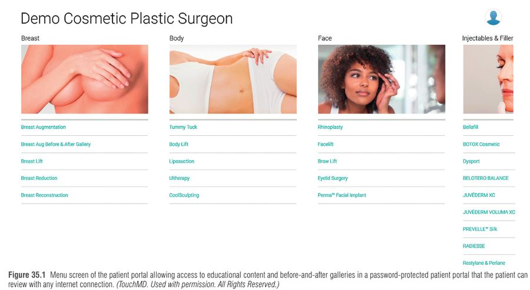

פרק 36: טכנולוגיה דיגיטלית בכירורגיה פלסטית Digital Technology in Plastic Surgery
מתוך Plastic Surgery, Neligan – כרך 1: Principles, מהדורה 5 (פרק 35 בספר המודפס) | Lynn Jeffers, Hatem Abou-Sayed, Haley M. Jeffers
פרק עקרונות/ניהול: הוא לא עוסק במחלה אלא ב"מסע המטופל" הדיגיטלי – מהרגע שהמטופלת מחפשת בגוגל ועד המעקב ארוך הטווח – ובכלים שמלווים את המנתח בכל שלב: רשומה רפואית אלקטרונית (EHR), ניהול תמונות, סימולציה תלת-ממדית, הדפסה תלת-ממדית, ניטור מרחוק, רישומים (registries) ו-Big Data. הרעיון המארגן: כל כלי דיגיטלי צריך לחסוך הקלדה כפולה, לשפר בטיחות ותיעוד, ולא להסיח מהמטופל.
1 ציר הזמן – איפה נכנסת הטכנולוגיה
לפני הביקור → בביקור → סביב הניתוח → בין ביקורים/מעקב → מחקר, השכלה ורישומים
הפרק בנוי לפי השלבים האלה. למה זה חשוב? כי מטופלת "מחוברת" מגיעה לייעוץ אחרי שכבר חקרה את המנתח (אתר, ביקורות, גלריות לפני/אחרי, מחירים), מילאה טפסים בפורטל – ולכן הייעוץ עצמו יעיל וממוקד יותר. מחקר שהובא בפרק הראה שמטופלות שידעו את המחיר לפני הייעוץ נטו יותר לקבוע ניתוח כבר בביקור הראשון.
איור 1: מסע המטופל – חמשת השלבים שבהם הפרק ממקם כלים דיגיטליים (החצים מימין לשמאל).
2 לפני הייעוץ: מידע, מוניטין וטלרפואה
מידע ובחירת מנתח: אתרים (plasticsurgery.org), גלריות לפני/אחרי (לעיתים רק מאחורי פורטל עם סיסמה), אתרי ביקורות (RealSelf, Yelp, Healthgrades). המוניטין הדיגיטלי מעצב את "המותג" של המנתח – ולכן מומלץ לנטר אותו (שירות צד-ג' או Google Alerts).
טלרפואה (telemedicine): ב-2019 66% היו מוכנים לייעוץ וידאו אך רק 8% ניסו; ב-COVID זינוק של פי 63 בשימוש ב-Medicare (מ-840 אלף ל-52.7 מיליון). מאפשרת לסנן מועמדים לא מתאימים לפני שהם נוסעים, ולבצע מעקב לאחר ניתוח.
מלכודות משפטיות: מתי נוצר יחסי רופא-מטופל, ועיסוק ברפואה בין-מדינתי ללא רישיון באותה מדינה (במיוחד כשהוויתורים של תקופת הקורונה מוסרים). ה-FSMB מפרסם חקיקת מודל.

תפריט פורטל המטופל עם תוכן חינוכי וגלריות לפני ואחרי — Neligan 5th ed., Fig. 35.1
3 בביקור: רשומה רפואית אלקטרונית (EHR)
חוק HITECH (2009) נתן תמריצים ל"שימוש משמעותי" (Meaningful Use) ברשומה מאושרת ע"י ה-ONC, וקנסות של עד 5% מ-2015 – ולכן האימוץ זינק. הבעיה: רוב המערכות נבנו לרופא ראשוני, ולא כוללות צרכים של מנתח פלסטי (הצעות מחיר קוסמטיות, מלאי ומכירת מוצרים, מקדמות, ארכיון תמונות עשיר).
מודל אירוח
מי מחזיק את השרת/הגיבויים
יתרון
חיסרון
שרת במשרד
הרופא
שליטה מלאה בנתונים
עלות חומרה ו-IT, עדכונים ידניים, פגיע יותר לכופרה (ransomware)
שרת חיצוני (off-site)
ספק צד-ג' (הרופא שוכר מקום)
אחריות לגיבוי/ביטוח עוברת לספק
עדכונים עדיין ידניים
SaaS (ענן, מנוי)
ספק ה-EHR
עלות התחלתית נמוכה, עדכון אוטומטי, גישה מכל מקום, הצפנה במנוחה ובתנועה
ייתכן שהחוזה מעניק לספק גישה/בעלות על נתונים מותממים; עלות חילוץ נתונים במעבר ספק
בהטמעת EHR צפי ירידה של כ-50% בפרודוקטיביות (משרד + רופא) לחודשים עד שנה; מחקר אחד: ~611 שעות הכנה ו-134 שעות למידה למשתמשי קצה. למרות ירידת היקף הקליניקה – ההכנסות לעיתים עלו בזכות קידוד וחיוב מדויקים יותר.
שאלות חוזה שחייבים לשאול (עו"ד!)
מי הבעלים של הנתונים? האם לספק מותר לגשת/למכור נתונים מותממים? משך חוזה ומה מהווה הפרה (השבתה, אובדן הסמכת ONC)? תהליך ועלות פענוח והעברת הנתונים בעזיבה? אחוז השבתה מרבי? ממשקים (API פתוח, PACS/DICOM, מעבדות)? עלות לכל משתמש/רופא/עמדה?
שימוש יעיל
פורטל מטופלים (חובה ב-EHR מאושר) – קליטת נתונים לפני הביקור; שינויים שהמטופל הזין דורשים אימות צוות.
תבניות (templates) לביקורים שכיחים; תיעוד ויזואלי על תרשים אנטומי (למשל נקודות הזרקת בוטולינום).
Scribes – במקום או מרחוק (גם דרך Google Glass), ומערכות "האזנה" שממירות שיחה לרשומה מובנית בעזרת AI/NLP.
התראות – אינטראקציות תרופתיות, "אישה מעל 50 בלי ממוגרפיה בשנה האחרונה".
ניהול פרקטיקה (PM): בדיקת זכאות ביטוחית, מחשבון E/M, "ניקוי" תביעות (claims scrubbing) לפני הגשה, "סגירה קשיחה" יומית של הספרים למניעת מעילה, מלאי לפי SKU, ו-CRM לתזכורות ושיווק אוטומטי.
אבטחה: ביטוח סייבר, אימות דו-שלבי רק על מכשירי החברה, רישום מכשירים שנמסרו לעובדים והחזרתם בעזיבה, מיילים ומספרים בניהול הארגון.
4 תמונות – הכלי הקליני והמשפטי החשוב ביותר
למה צריך מערכת ייעודית? ארכיון תמונות עם תגיות (metatags) – גיל, ניתוח, גודל שתל, שלב (לפני/תוך/אחרי) – מאפשר חיפוש כמו "כל תמונות 6 חודשים אחרי הקטנת שד באישה בת 28–40 עם כריתה מעל 600 גרם". סימון על התמונה בזמן אמת (אסימטריה, קו חתך) הוא גם כלי חינוך וגם כלי ניהול סיכונים.
הסכנה: metadata. שם, תאריך לידה וניתוח נשארים "צמודים" לקובץ וקריאים למנוע חיפוש. חברה שמגגלת את שם חברתה עלולה להגיע לגלריית הגדלת השד שלה → הפרת HIPAA, תביעה, אובדן מטופלים. קעקוע מזהה מגדיל את הסיכון. הסכמה לפרסום ניתנת לביטול – והסרה ממנועי חיפוש מסובכת; יש לתאם ציפיות מראש.
צילום בשלושה מבטים והעלאה לשחזור תלת-ממדי אוטומטי — Neligan 5th ed., Fig. 35.6
5 סימולציה דיגיטלית ותלת-ממד
מערכות כמו Crisalix/Vectra יוצרות מודל תלת-ממדי משלוש תמונות (חזית, צד ימין, צד שמאל) או מסורק על iPad. שימושים מרכזיים: בחירת שתל (עגול מול אנטומי, גודל, מיקום כיס), הדגמת 500 גרם כריתה שהביטוח דורש מול הקטנה מצומצמת בתשלום עצמי, הדגמת הצורך במסטופקסיה בנוסף לשתל, "חיסור" נפח שד שלם לתכנון שחזור ישיר-לשתל.
כל תמונה מדומה חייבת לשאת הצהרה שאינה הבטחה לתוצאה – גם כהגנה משפטית וגם לתיאום ציפיות.
Penn Medicine: מודלים תלת-ממדיים ותכנון ניתוחי וירטואלי (VSP) לפני ניתוח – הדגמה של מה שהפרק מתאר בחלק הפריאופרטיבי.
הצעות מחיר והסכמה מדעת דיגיטליות (DocuSign – חשש לגבי הבנה ואותנטיות ללא עד; אימות דו-שלבי, בעתיד blockchain); מרשם אלקטרוני (Surescripts); מחשבוני סיכון: Caprini (DVT), ASA, Fitzpatrick, BRA Score (סיבוכי שחזור שד על בסיס NSQIP/TOPS/MROC); שפת HL7 לאינטגרציה
מידול
אנגיוגרפיה דיגיטלית לפלאפי פרפורטור; CAD/CAM והדפסת 3D לשתלים בהתאמה אישית (טיטניום, PMMA, הידרוקסיאפטיט, PEEK), פלטות מנדיבולה
חדר ניתוח
RFID לספירת פדים; data fusion ומציאות רבודה (למשל שיקוף הצד הבריא בטראומת פנים); מצלמות POV (GoPro) להוראה; Doppler מושתל לבדיקת פתיחות אנסטומוזה; הדמיית פרפוזיה (SPY); אולטרסאונד נייד (Clarius, Butterfly) ל-TAP block באבדומינופלסטיה
אחרי הניתוח
Doppler להמשך ניטור פלאפ, מדדים חיוניים לסמארטפון, אפליקציות צ'אט מאובטחות עם שליחת תמונות פצע (עם גבולות ברורים), פרוטוקולי ERAS עם תזכורות אוטומטיות
אזהרה חוזרת בפרק: כלי הזרמה/צילום בחדר הניתוח אסור שיסיחו מהעדיפות העליונה – המטופל.
7 מעקב, קהילה, חינוך ומחקר
Wearables: מדרסים חכמים ללחץ כף רגל בסוכרתיים, חיישני פצע (לחץ, זיהום, התאמת לחץ שלילי), בעתיד חיישנים בתוך שתלים וחבישות.
קהילות מקוונות (crowdsourcing, RealSelf) – משפיעות על מוניטין ו-SEO; לשמור על פרטיות.
חינוך: סימולטורי VR (Oculus), סימולציה עם נתוני CT ומשוב מישושי, אטלסים דיגיטליים שכבתיים, ספריית וידאו POV, כנסים היברידיים (מאז COVID).
רישומים: TOPS (ASPS), NBIR (National Breast Implant Registry), PROFILE (BIA-ALCL), GRAFT (השתלת שומן) – שלושת האחרונים בשיתוף PSF ו-FDA; העברה ישירה מה-EHR דרך FHIR.
Big Data → מעבר מרפואה מבוססת-ראיות לרפואה מדויקת (precision medicine); מסייע להוכיח יעילות/בטיחות מול משלמים במודל value-based, ולמנוע "פאניקה" לא מבוססת – או לזהות בעיית בטיחות לפני משבר לאומי.
מנתח פלסטי ילדים מסביר איך בינה מלאכותית והדפסה תלת-ממדית משפרות תוצאות – חיבור בין Big Data, מידול ותכנון ניתוחי.
8 טכניקות זכירה
ראשי תיבות: "PHOTO" – מה בודקים לפני שמעלים תמונה לרשת
P – Permission: הסכמה כתובה לפרסום (וניתנת לביטול). H – HIPAA: אין פרטים מזהים. O – Obvious identifiers: קעקועים, שומות, פנים. T – Tags/metadata: למחוק שם, ת"ל ותאריך מהקובץ. O – Ownership: בחוזה – למי שייכות התמונות.
ראשי תיבות לבחירת EHR: "CODES"
Certification (ONC) · Ownership of data · Downtime limits · Exit (העברת נתונים בעזיבה) · Support & integration (API).
סיפור דמיוני
דמייני את מטופלת "דיגי" שמגיעה לקליניקה עם תיק גב שקוף. בתיק היא נושאת את כל מה שגוגל אמר לה (ביקורות, מחירים). בכניסה פקידה-רובוט מעבירה את התיק ל"כספת בענן" (SaaS) עם מנעול כפול (אימות דו-שלבי). בחדר המנתח מקרין הולוגרמה של השד החדש, ועליה חותמת אדומה "לא הבטחה!". אחרי הניתוח דיגי מקבלת שעון חכם שמצפצף למנתח, ובסוף הנתונים שלה נופלים לתוך "אגם נתונים" ענק (Big Data) שממנו המנתחים לומדים. אבל – ליד האגם עומד שומר בשם HIPAA, שמוחק מכל תמונה את התווית עם שמה לפני שהיא נכנסת למים.
ד"ר ל', מנתחת פלסטית בפרקטיקה פרטית, עוברת ל-EHR בענן. חודש לאחר ההטמעה מספר המטופלים היומי ירד בחצי. מטופלת לשעבר מתלוננת שכאשר חיפשה את שמה בגוגל הופיעה תמונה שלה מגלריית "הגדלת שד" באתר הקליניקה. במקביל, מטופלת חדשה מבקשת לראות סימולציה של שתל 350 סמ"ק ושואלת אם "כך זה ייראה בדיוק".
1. מה ההסבר הסביר ביותר לכך שהתמונה הופיעה בחיפוש על שם המטופלת?
הפרק מדגיש שתגיות metadata נשארות בקובץ ונקראות ע"י מנועי חיפוש – יש להסירן לפני העלאה. זיהוי פנים אינו המנגנון שתואר; העלאה עצמית ומכירת נתונים אינן מתאימות לתרחיש.
2. ירידת פרודוקטיביות של ~50% אחרי הטמעת EHR:
הפרק מצטט המלצת מומחים לצפות לירידה של 50% בתקופת ההטמעה, ומציין שלמרות זאת ההכנסות עלו בחלק מהמחקרים. החלפת מערכת היא יקרה ומזיקה; הירידה אינה תלויה במודל האירוח; הקנסות אינם הסיבה.
3. מה נכון לגבי סימולציה תלת-ממדית שמוצגת למטופלת?
הפרק ממליץ במפורש להדפיס disclaimer על כל תמונה מדומה. יש מערכות שעובדות עם iPad/טלפון בלבד, והסימולציה משמשת גם לתכנון (בחירת שתל, נפח כריתה).
4. איזו טכנולוגיה מוזכרת בפרק למניעת השארת פדים בגוף?
RFID משמש למעקב אחר פדי לפרוטומיה. Doppler מושתל – לניטור אנסטומוזה; FHIR ו-HL7 הם תקני העברת מידע בין מערכות.
5. איזה רישום נועד במיוחד לחקר BIA-ALCL?
PROFILE (Patient Registry and Outcomes For breast Implants and anaplastic large cell Lymphoma Etiology) – PSF+FDA. GRAFT = השתלת שומן, TOPS = תוצאות כלליות של ASPS, MROC = קונסורציום תוצאות שחזור שד.
6. מה היתרון המרכזי של מודל SaaS מבחינת אבטחה לפי הפרק?
שרתים מקומיים פגיעים יותר לכופרה. ביטוח סייבר מומלץ בכל מקרה, ובחלק מחוזי SaaS דווקא יש לספק גישה לנתונים מותממים – יש לבדוק.